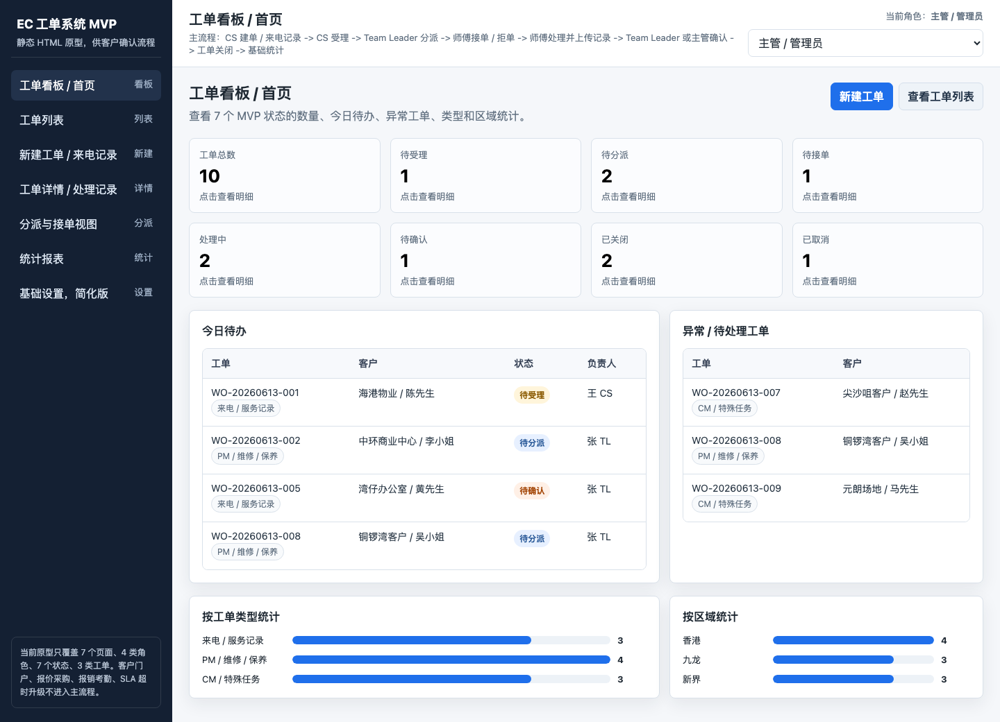
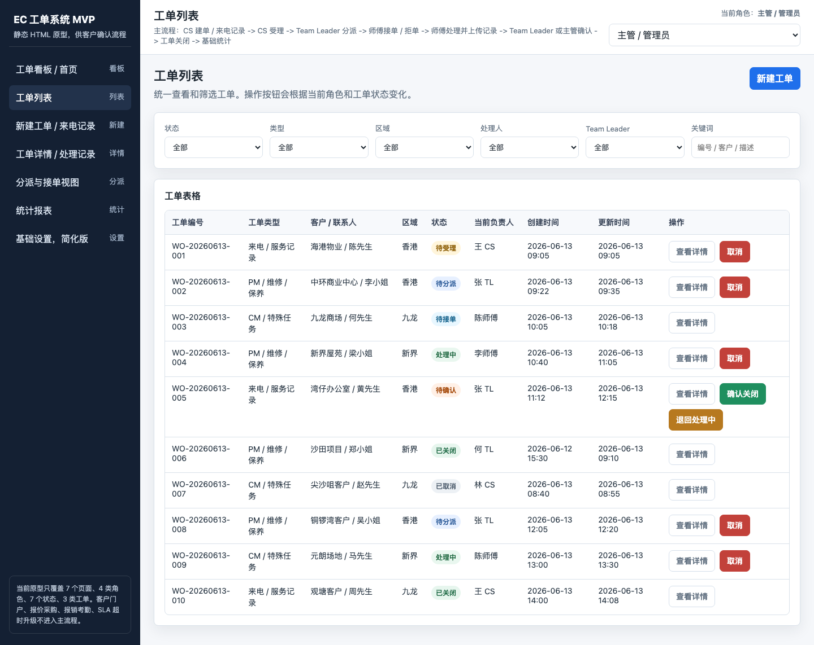
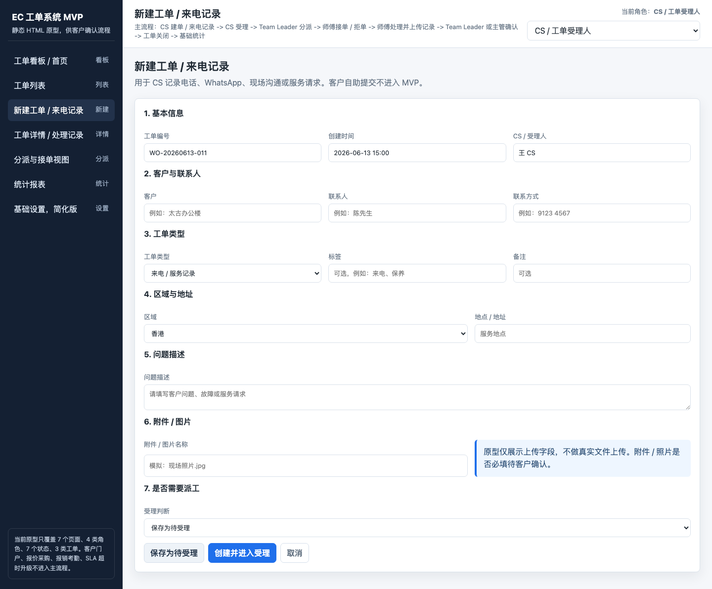
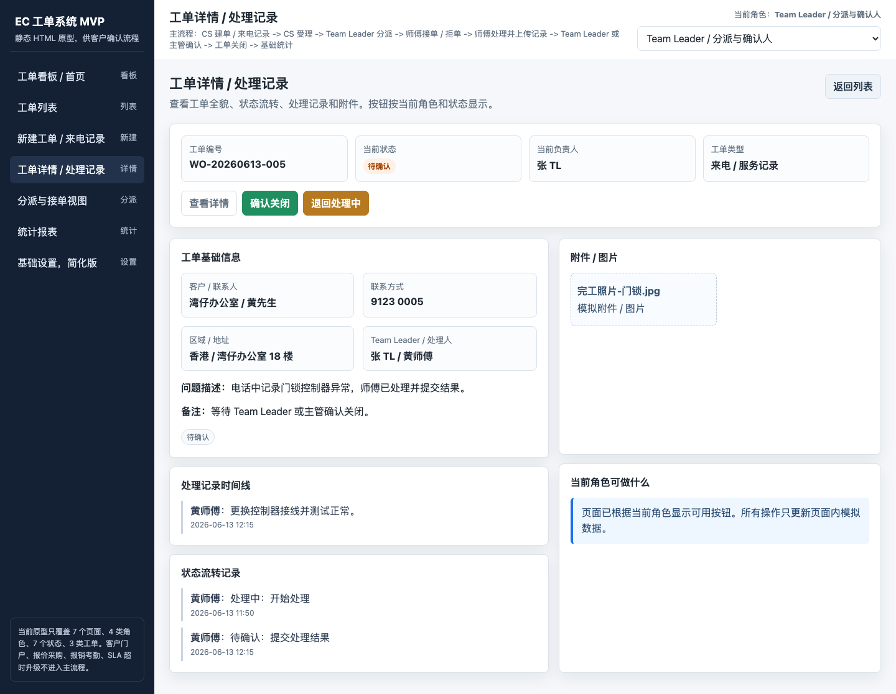
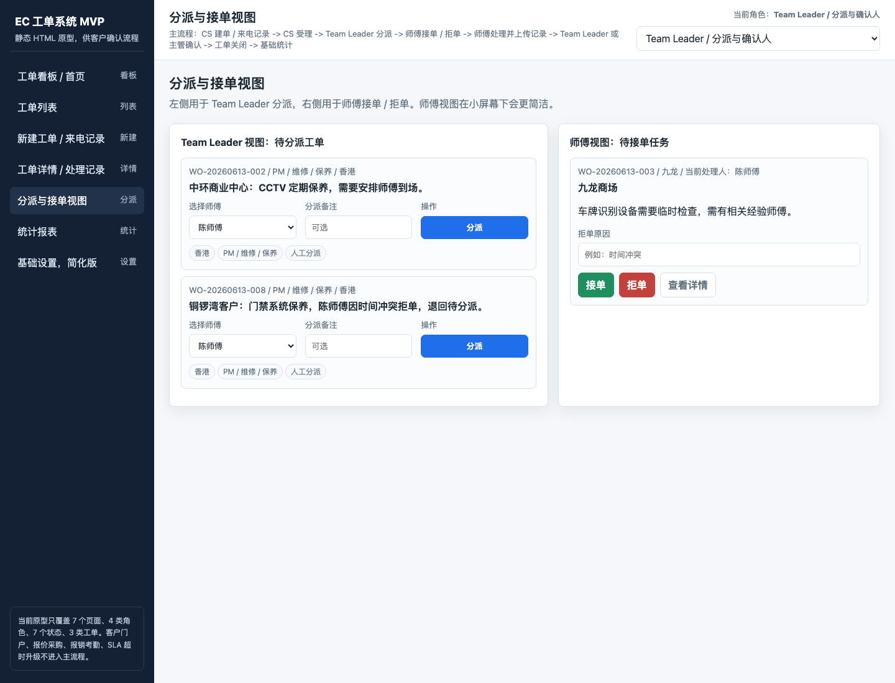
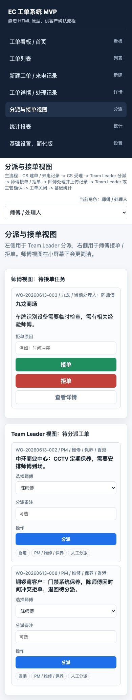
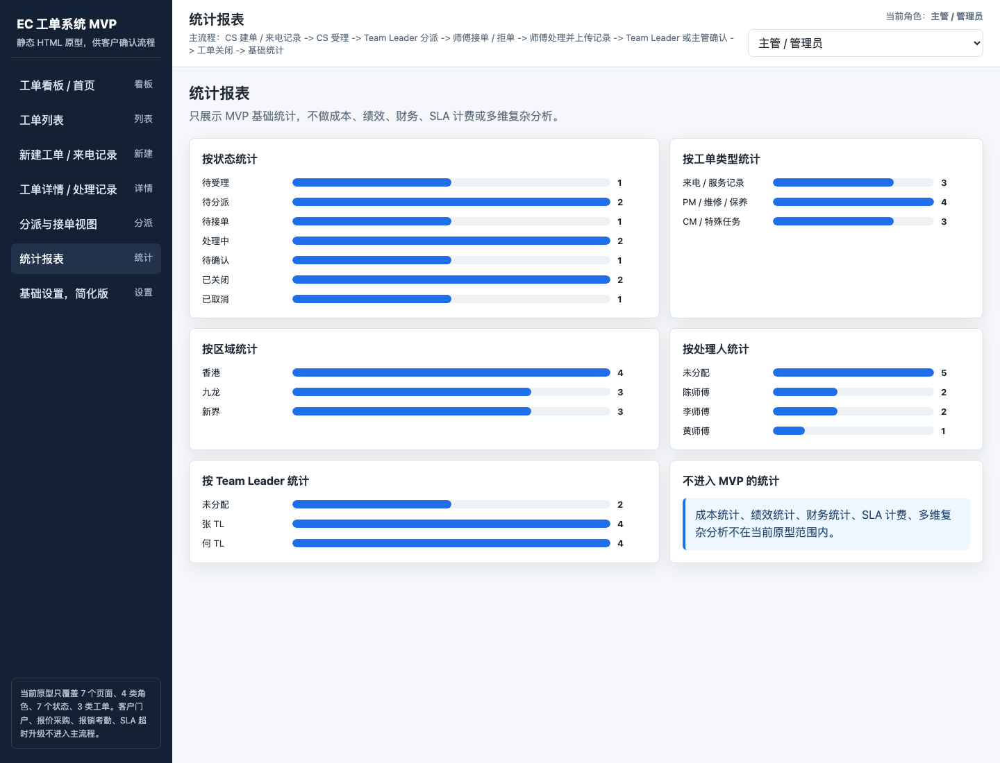
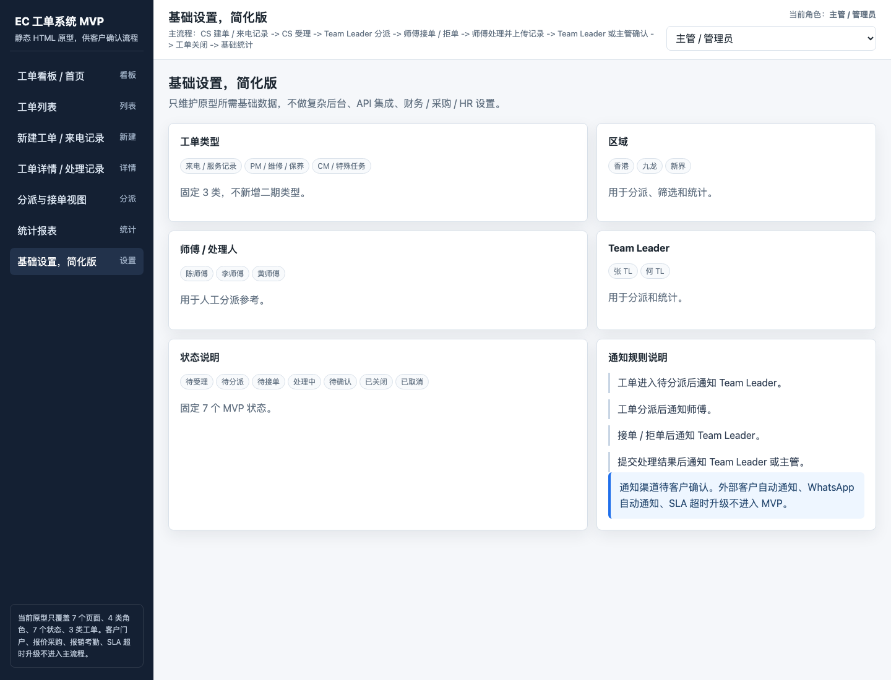

客户流程确认版 · 2026-06-14
客户流程确认会
EC 工单系统
第一阶段原型汇报
本次汇报聚焦一件事：确认第一版工单系统是否能支撑 EC 的服务请求记录、分派、处理、确认和基础统计。
当前阶段：流程确认 / 原型确认
先确认业务，再评估实施
第一阶段范围不扩大
今天希望确认什么
- 第一版只做内部工单闭环，是否符合客户预期。
- CS、Team Leader、师傅、主管四类角色是否足够。
- 7 个状态和拒单回退规则是否可接受。
- 原型页面是否能支撑客户确认和后续实施评估。
01 / 客户业务语境
不是做一个泛用系统，而是服务 EC 的现场服务管理
从“请求分散”到“过程可追踪”
EC 面向香港客户提供特低电压解决方案、安装及维修保养服务，场景覆盖保安系统、停车场系统、会所管理系统、电讯及广播系统等。工单系统第一版应先解决服务过程可见性，而不是一次做成大而全平台。
客户最关心的不是功能多，而是工单不要卡住。
- 谁接到请求？
- 谁负责分派？
- 师傅是否接单？
- 现场处理有没有记录和照片？
- 最后是否有人确认关闭？
02 / 汇报结论先行
建议本次会议确认的版本
第一版建议只做一个清晰、可落地的内部工单闭环
1
条主流程
从 CS 建单到确认关闭，再进入基础统计。3
类工单
来电 / 服务记录、PM / 维修 / 保养、CM / 特殊任务。4
类角色
CS、Team Leader、师傅、主管 / 管理员。7
个状态
待受理到已关闭 / 已取消，覆盖第一版闭环。本原型不是最终界面设计，也不是上线版本；它用于帮助客户确认流程、角色、状态、页面和第一阶段范围。
03 / 第一阶段边界
第一版要做
把工单流转跑通
- CS 建单 / 来电记录。
- CS 受理并判断是否需要派工。
- Team Leader 分派师傅。
- 师傅接单 / 拒单、处理并上传记录。
- Team Leader 或主管确认关闭。
- 基础查询与基础统计。
第一版不做
避免范围失控
- 不做客户自助门户。
- 不做 WhatsApp 自动通知。
- 不做 SLA 超时升级。
- 不做财务 / 采购 / HR 完整流程。
- 不做 AI 图片检测。
- 不做多系统深度集成。
04 / 角色分工
让每个动作都有负责人
4 类角色，覆盖第一版主流程
CS
记录客户请求，完成受理判断，决定派工、现场解决或取消。
Team Leader
接收待分派工单，选择师傅，跟进拒单，确认处理结果。
师傅
查看任务，接单 / 拒单，现场处理，上传记录和照片。
主管 / 管理员
查看整体进度，处理异常，确认关闭，维护简化基础设置。
客户、CR、采购、财务、HR 不作为第一阶段独立工作台；如需要，只作为字段、备注或后续阶段角色。
05 / 主流程
客户看到的是一条能闭环的路
从来电记录到工单关闭
01CS 建单记录客户、联系人、区域和问题。
02CS 受理判断派工、现场解决或取消。
03TL 分派指定师傅，工单进入待接单。
04师傅响应接单进入处理；拒单回到待分派。
05现场处理填写处理记录，上传照片 / 附件。
06提交确认师傅提交结果，进入待确认。
07确认关闭TL 或主管确认，或退回处理中。
08基础统计按状态、类型、区域和人员汇总。
06 / 状态规则
状态少一点，流程清楚一点
7 个状态覆盖第一版闭环
待受理
待分派
待接单
处理中
待确认
已关闭
已取消
拒单不是状态
师傅拒单后填写原因，工单回到“待分派”。
完成后先确认
师傅提交结果后进入“待确认”，不直接关闭。
关闭后先只读
是否允许重开，需要客户在本次评审后确认。
07 / 原型演示路径
建议现场按这个顺序讲
从管理视角进入，再落到一线操作
演示不需要逐个字段解释，而是让客户快速判断：这个流程是否符合 EC 当前工作方式。
- 先看首页：整体工单状态是否清楚。
- 再看列表：是否方便查询和筛选。
- 然后看建单：CS 录入是否足够简单。
- 再看详情：状态、记录、附件、按钮是否匹配。
- 最后看分派、师傅手机端和基础统计。
08 / 看板展示
工单看板 / 首页主管视角

未找到首页截图。
讲解重点
管理层一眼看到工单分布
- 7 个状态数量集中展示。
- 今日待办快速定位需要处理的工单。
- 异常 / 待处理工单用于暴露风险。
- 类型和区域统计用于判断工作量分布。
09 / 列表与建单
工单列表查询 / 筛选

未找到工单列表截图。
新建工单 / 来电记录CS 录入

未找到新建工单截图。
10 / 详情与处理
工单详情 / 处理记录状态与按钮

未找到详情截图。
这一页是工单的“事实页”
让客户确认每个状态能做什么
- 显示当前状态、当前负责人、工单类型。
- 展示客户信息、区域地址和问题描述。
- 保留处理记录、附件 / 图片、状态流转记录。
- 按钮根据角色和状态变化，避免越权操作。
11 / 分派与师傅端
Team Leader 分派人工分派

未找到分派截图。
师傅手机视图接单 / 拒单

未找到手机截图。
12 / 统计与设置
统计报表第一阶段基础统计

未找到统计截图。
基础设置简化版

未找到设置截图。
13 / 不进入第一阶段
边界说清楚，项目才不会失控
这些内容不放进第一版主流程
客户自助门户
WhatsApp 自动通知
SLA 超时升级
财务 / 采购 / HR
AI 图片检测
多系统深度集成
报价 / 安装完整流程
复杂绩效 / 成本报表
这些能力可以作为后续阶段候选，但不能在第一阶段默认为必做。第一版先确认工单闭环和一线可用性。
14 / 客户确认问题
会议上最好直接确认
这 8 个问题决定后续实施范围
如果这些口径能确认，下一步就可以围绕第一阶段版本进行实施范围、周期和工作量评估。
- 是否确认当前 1 条主流程？
- 是否确认 3 类工单类型？
- 是否确认 4 类角色与职责？
- 是否确认 7 个状态和拒单回退规则？
- PM / CM 的最终业务定义是什么？
- 通知先做系统内提醒，还是要接外部渠道？
- 附件 / 照片是否必填，哪些场景必填？
- 已关闭后是否允许重开？
15 / 下一步
建议推进路径
先确认，再小修，再进入实施评估
01客户确认流程确认主流程、角色、状态和页面方向。
02收集反馈记录客户对字段、按钮、通知和移动端的意见。
03小修原型只调整已确认范围内的页面和文案。
04冻结范围明确第一版做什么、不做什么。
05实施评估评估配置 / 定制开发边界和周期。
06工作拆分拆成表单、状态、权限、上传、统计等工作项。
07第一版实施进入可试用版本配置或开发。
08试用优化由 CS、Team Leader、师傅和主管试用验证。
建议结论：当前材料可以作为客户流程确认稿。确认后再进入实施评估，不建议在本轮把后续阶段能力提前放入第一版。